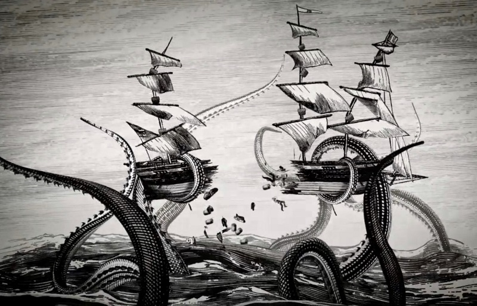

You continue to study your charts and make your decision. "Captain, if we continue towards that speck, it looks like we will be sailing into uncharted waters. I know this was part of your theory. I think you may be right!"
As the Captain gives the orders to head towards the speck, you continue to study your charts and begin to make notes. After all, this could be your chance to cement your reputation as a navigator. You suddenly feel the ship start to move faster. You decide to go up on deck and see what is happening. You hear one of the crew call out, "Looks like rough waters coming up!"
You grab your spyglass as you climb up on deck. As you continue to look towards the speck, you make out what look like dark trees coming up from what appears to be an island. You keep looking and see what looks like a giant eyeball staring back at you! "Captain, reverse course!" you yell, but it appears to be too late. The boat is lifted out of the water by a huge kraken. Tentacles suddenly seem to be everywhere. Crew members are being snatched off the ship. Then there is the sound of wood starting to crack and splinter. There is more than one kraken! You valiantly try to fight off the tentacles as they wrap around, but you feel yourself being pulled overboard. When you look down, you realize that you have unwittingly sailed into what seems to be a nest of kraken, and they are not going to let you get out of there alive!
